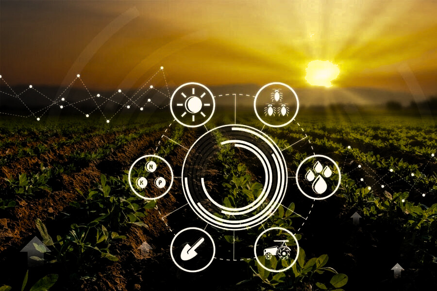
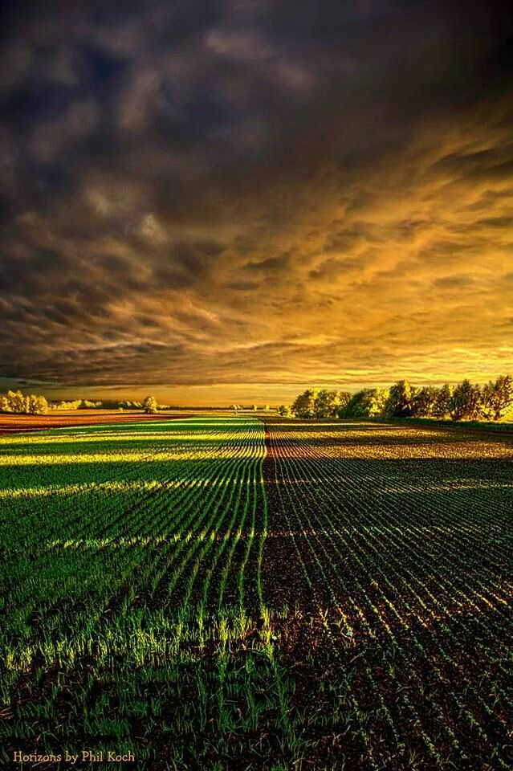

Empowering farmers with cutting-edge technology to optimize crop yields, reduce costs, and build sustainable agricultural practices for the future.
Get Started

Agriculture for Future Development
Optimize Yields
Reduce Costs

95%
100+
400+
100%

Leading the digital transformation of agriculture through innovative technology solutions that empower farmers and promote sustainable practices.
